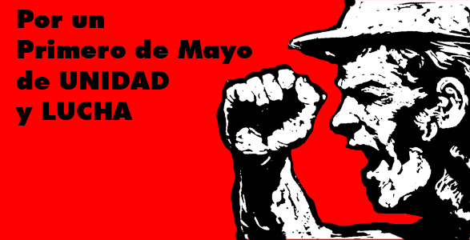

El Día Internacional de los Trabajadores o Primero de Mayo es la fiesta por antonomasia del movimiento obrero mundial. Es una jornada que se ha utilizado habitualmente para realizar diferentes reivindicaciones sociales y laborales a favor de las clases trabajadoras por parte, fundamentalmente, de los movimientos socialistas, anarquistas y comunistas, entre otros.
Desde su establecimiento en la mayoría de países (aunque la consideración de día festivo fue en muchos casos tardía) por acuerdo del Congreso Obrero Socialista de la Segunda Internacional, celebrado en París en 1889, es una jornada de lucha reivindicativa y de homenaje a los Mártires de Chicago. Estos sindicalistas anarquistas fueron ejecutados en Estados Unidos por participar en las jornadas de lucha por la consecución de la jornada laboral de ocho horas, que tuvieron su origen en la huelga iniciada el 1 de mayo de 1886 y su punto álgido tres días más tarde, el 4 de mayo, en la Revuelta de Haymarket. A partir de entonces se convirtió en una jornada reivindicativa de los derechos de los trabajadores en sentido general que es celebrada en mayor o menor medida en todo el mundo.
En Estados Unidos, Canadá y otros países no se celebra esta conmemoración. En su lugar se celebra el Labor Day el primer lunes de septiembre en un desfile realizado en Nueva York y organizado por la Noble Orden de los Caballeros del Trabajo (Knights of Labor, en inglés). El presidente estadounidense Grover Cleveland auspició la celebración en septiembre por temor a que la fecha de mayo reforzase el movimiento socialista en los Estados Unidos desde 1882. Canadá se unió a conmemorar el primer lunes de septiembre en vez del primero de mayo a partir de 1894.
Hoy se cumplen 150 años del histórico Combate Naval del 2 de Mayo. Corrían los primeros días de mayo de 1866 y la situación en la bahía del Callao era muy tensa. Una peligrosa escuadra española había ocupado la isla San Lorenzo, aledaña al primer puerto peruano y desde allí amenazaba a la defensa peruana, que no solo estuvo conformada por soldados sino también por la propia civilidad patriota. Se trataba del último intento español por recuperar sus ex colonias americanas.
Los buques españoles atacaron en tres divisiones a las defensas nacionales que contaban con algunos cañones de mayor calibre que la escuadra hispánica. Estos tenían información de las fuerzas americanas puesto que habían desplegados espías en el puerto. Los españoles, en un principio, antes del combate, estuvieron al mando del almirante Luis Hernández Pinzón; y luego del almirante Casto Méndez Núñez; mientras que los nacionales obedecían las órdenes directas del ministro de Guerra, José Gálvez, y la dirección general del presidente del Perú, Mariano Ignacio Prado.
Era el punto máximo de una guerra hispano-sudamericana (España, en primera instancia, buscaba cobrar una indemnización por gastos de la guerra de independencia), a la que se sumó Chile, Ecuador y Bolivia (estos dos últimos no participaron activamente). Y es que el 12 de enero de ese año, Perú, Chile, Ecuador y Bolivia habían firmado una alianza contra España, la cual había mandado en 1864 una supuesta expedición científica que luego se reveló como invasora, primero de las islas Chincha (Ica) y después de San Lorenzo (Lima) en 1866.
El 3 de mayo se festeja "El Día del albañil" y es la misma fecha en que se celebra el día de la Santa Cruz con este motivo los albañiles desde el sábado empezaron a construir su cruz de los mismos desechos de la obra para colocarla hoy en la parte superior y más alta de la construcción.
Esta es una fiesta muy antigua, fiesta que conmemora a la Cruz en la que Cristo realizó su mayor sacrificio, y que además recuerda su triunfo sobre la muerte a través de su resurrección.
Sin embargo, la cruz posee también un segundo significado, puesta está relacionada con una antigua creencia indígena.
Ante la Conquista, los indígenas mesoamericanos relacionaron a la cruz con las direcciones cardinales de la cosmografía indígena norte, sur, este oeste y centro que gráficamente formaban la cruz.
La Batalla de Atlixco tuvo lugar el 4 de mayo de 1862 en las inmediaciones de la Hacienda de las Traperas en Atlixco en el estado de Puebla, México, entre elementos del ejército mexicano de la república, al mando de los generales Antonio Carvajal y Tomás O'Horan contra las tropas al servicio del Segundo Imperio Mexicano comandadas por el general José María Cobos y de Leonardo Márquez,
compuesta de soldados conservadores mexicanos en apoyo de envío de refuerzos para llevar a cabo la Batalla de Puebla, durante la Segunda Intervención Francesa en México.
Esta batalla culminó con una victoria republicana y debido a esto el grupo conservador de Márquez no pudo lograr su objetivo de auxiliar a las tropas francesas del Conde de Lorencez en la batalla de Puebla.

En 1862 las armadas de España, Inglaterra y Francia desembarcaron en Veracruz dispuestas a cobrar sus préstamos. Después de negociar con el representante de México España e Inglaterra se retiraron. Napoleón III, Emperador del Segundo Imperio Francés quería establecer una monarquía favorable para Francia, y asimismo, quería disolver el Gobierno Constitucional Mexicano.
Las fuerzas francesas al mando del general Lorencez se componían de (7.000) siete mil soldados que salieron hacia la ciudad de México. El Presidente Juárez le dio la orden al General Ignacio Zaragoza de detener el avance de las fuerzas armadas francesas en los fuertes de Loreto y Guadalupe cerca de la ciudad de Puebla. Zaragoza contaba con sólo (2,000) dos mil hombres.
El 5 de mayo de 1862, los cañones resonaron y los rifles dispararon y más de (1,000) mil soldados franceses cayeron muertos. Los mexicanos habían ganado la batalla, pero no la guerra. Sin embargo, esta fecha es la que simboliza el valor mexicano ante una armada tan formidable. Derrotadas en la batalla de Puebla, se refugiaron en Orizaba mientras esperaban refuerzos para proseguir la ofensiva. Mientras tanto, Luis Bonaparte, el ambicioso sobrino de Napoleón I, se alió con grupos de conservadores mexicanos para imponer un rey europeo en el país.

El ser madre no es una profesión, no es algo que por enseñanza adquiere la mujer, sino un designio de la naturaleza el que le otorga a las mujeres capacidad y aptitud para ser madre, virtud que le permite perpetuar la especie humana que la hace el ser más amoroso de la humanidad. El día de las Madres es una festividad que se celebra en honor de las madres y se celebra en diferentes fechas del año según el país, el 10 de mayo se celebra en Arabia Saudita, el Salvador, Guatemala, India, malasia, Omán, Pakistán, Qatar, Singapur y Uruguay.
Este día fue creado por Julia Ward Howe, en 1870, originalmente como un día de madres por la paz, que luego se convirtió en un día para que cada familia honrase a su madre. Actualmente ha sido aceptada esta celebración en muchos lugares del mundo.Las primeras celebraciones del Día de las Madres se remontan a la antigua Grecia, donde se le rendían honores a Rea, la madre de los dioses Zeus, Poseidón y Hades.
Los católicos transformaron estas celebraciones para honrar a la Virgen María, la madre de Jesús. En el santoral católico el 8 de diciembre se celebra la fiesta de la Inmaculada Concepción, fecha que los panameños adoptaron para la celebración del Día de la Madre. En Inglaterra hacia el siglo XVII, tenía lugar un acontecimiento similar, también relacionado con la Virgen, que se denominaba Domingo de las Madres. Los niños concurrían a misa y regresaban a sus hogares con regalos para sus progenitoras. Además, como muchas personas trabajaban para gente acaudalada y no tenían la oportunidad de estar en sus hogares, ese Domingo se le daba el día libre para visitar a sus familias.
Ser maestro es una de las labores más nobles del ser humano. Seguramente existe un maestro que ha marcado tu vida o se ha convertido en una inspiración para tu vida profesional. Desde aprender a leer hasta entender algunas complicadas teorías, estos seres humanos dedican su vida a mostrar lo que sabes y vale mucho reconocer su labor. Pero, ¿sabes por qué se celebra este día?En 1918, se llevó a cabo en México la primera conmemoración del Día el Maestro, el decreto fue firmado por el presidente Venustiano Carranza.
La propuesta pretendía que se instituyera un día en homenaje a los maestros y que fuera el 15 de mayo, fecha conmemorativa de la toma de Querétaro. La iniciativa fue aprobada en 1917, y un año después se celebro por primera vez está fecha. Esta celebración varia de día según las naciones , pero el Día Mundial del Maestro, instituido por la UNESCO, se celebra el 5 de octubre. La Conferencia Interamericana de Educación (celebrada en Panamá en 1943) recomendó celebrar el Día Panamericano del Maestro el 11 de septiembre (fallecimiento del educador y presidente argentino Domingo Faustino Sarmiento).
Lo estados con más profesores son el Estado de México y el Distrito Federal. Las entidades con menos maestros son Baja California Sur, Colima y Campeche. Un 80% de los maestros, hombres, tienen escolaridad superior y un 72% en el caso de las maestras. En México hay un 1 millón 800 mil maestros, de los cuales un 61.3% son mujeres. En México hay 27 millones de estudiantes.
Además de conmemorar la toma de Querétaro, para contestar esta pregunta debemos ubicar a un personaje central en la historia de la educación religiosa: San Juan Bautista de La Salle, quien fue un sacerdote y pedagogo francés innovador , que consagró su vida a formar maestros destinados a la educación de hijos de artesanos y de niños pobres de la época. Así, la celebración a los maestros también se conmemora el 15 de mayo porque ese día, pero de 1950, fue declarado patrono especial de todos los educadores de la infancia y de la juventud y Patrono universal de los educadores por el papa Pío XII (1876-1958).